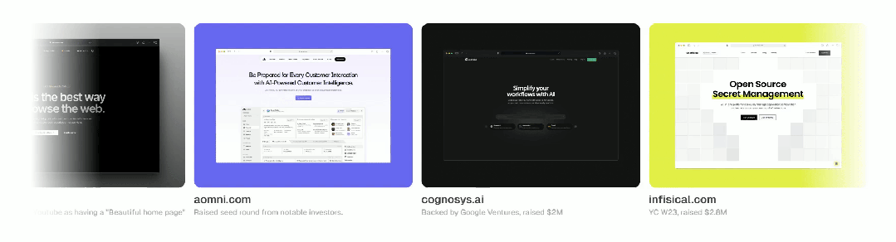
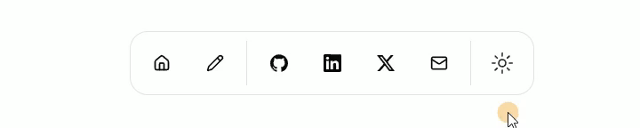
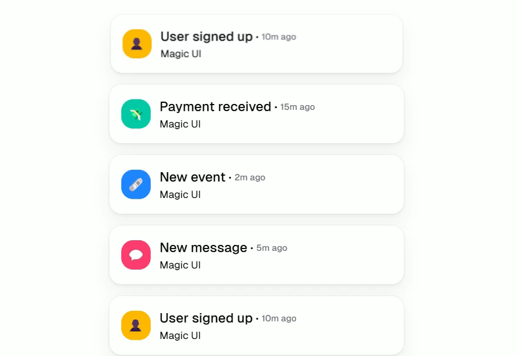
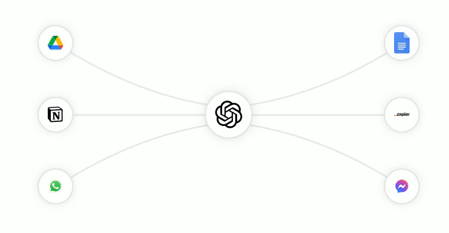
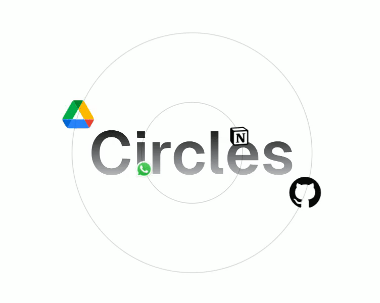
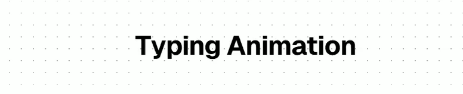
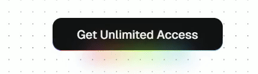
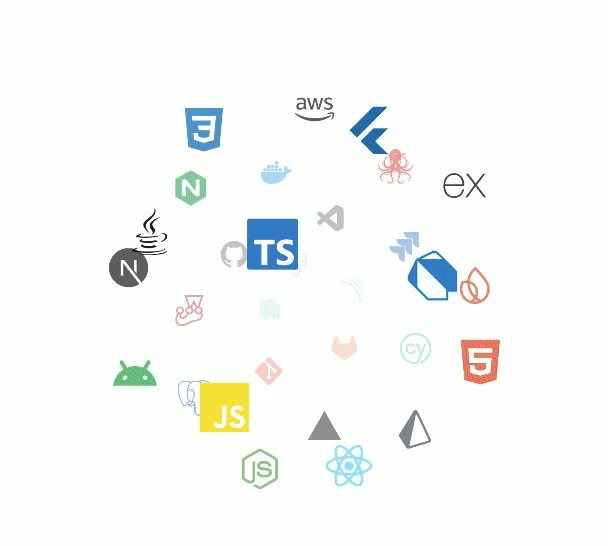
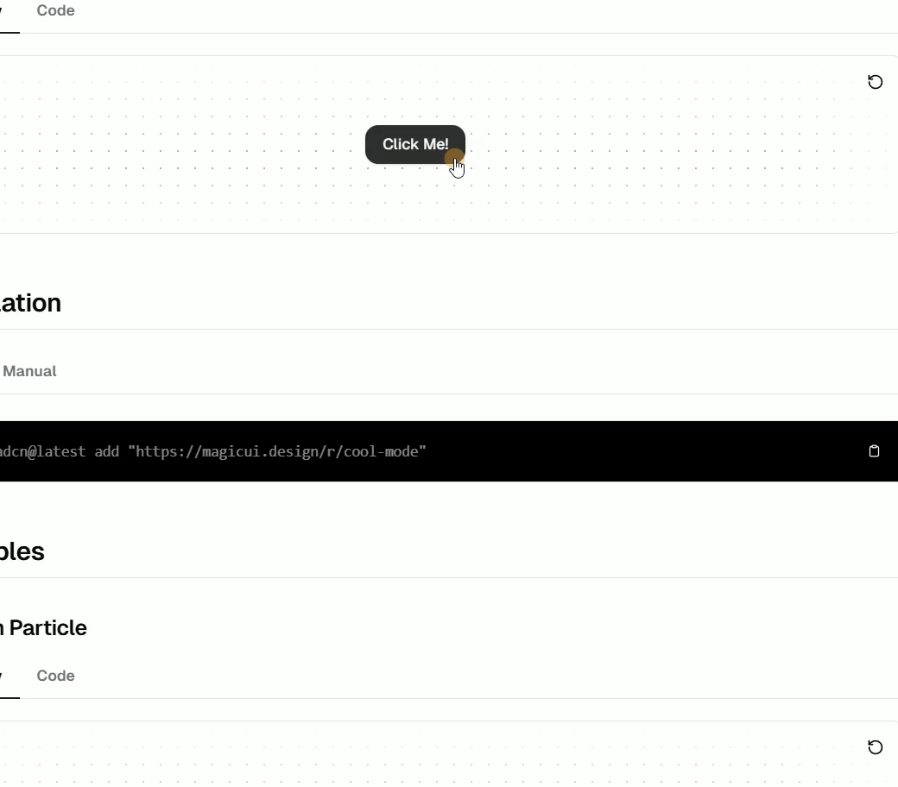
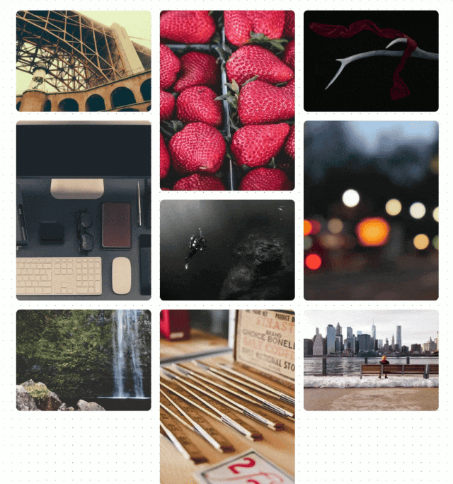

MagicUI 是一个轻量级且功能丰富的前端组件库。该库提供了一系列精美的 UI 组件，同时注重高性能和易用性，满足了开发者对 UI 一致性和灵活性的重要需求。以下是对 MagicUI 组件库的介绍：
官方的介绍简洁明了：将代码直接复制粘贴到你的应用程序中以创建神奇的落地页。MagicUI 适用于各种项目场景，无论是企业级系统还是个人项目，开发者都可以通过它实现美观、响应式的用户界面。
主要功能和特性：
轻量高效：MagicUI 采用了轻量化的设计，确保在引入组件库时不会对项目的体积产生过大影响。
高可定制性：开发者可以根据项目需求灵活调整组件的样式和功能，减少对默认配置的依赖。
丰富的 UI 组件：包括种类丰富的交互组件，可以有选择性地使用。
现代化设计：组件的样式遵循现代设计规范，具备优美的外观和一致的用户体验，能够很好地适配不同的项目风格。
跨平台支持：MagicUI 组件适配了移动端和桌面端，提供了良好的响应式体验。
         MagicUI 特别适用于构建各类 Web 应用程序，包括但不限于以下场景：
与传统的 UI 组件库（如 Ant Design、Element Plus）相比，MagicUI 具备更轻量、更灵活的特点，并且主打现代 WEB 页面交互小效果。它没有过多复杂的功能，而是注重提供开发过程中常用的基础组件，降低了学习曲线，适合希望快速上手并且对性能有要求的项目。
如果你想在自己的网站中添加各种样式精美的交互逻辑，但是又缺乏灵感，就可以关注一下这个组件库，能够帮你获得极大的便捷和效率提升！
官网：https://magicui.design/
github：https://github.com/magicuidesign/magicui